Introduction
Décrit le comportement d'un système (objets, GUI…) au moyen d'un automate d'états
Le comportement est modélisé par un graphe
- Nœuds = états possibles des objets
- Arcs = transitions d'état à état
Une transition
- Exécution d'une action
- Réaction de l'objet suite à un événement
Principe
Description du cycle de vie d'un système
- États possibles
- Événements provoquant la transition d'un état à un autre
- Actions subies ou provoquées qui accompagnent un changement d'état
- Activités qui surviennent tant que l'objet est dans un état donné
Remarques importantes
- On se limite aux entités (classes, fenêtres…) cruciales pour le champ de l'étude
- On se limite aux états intéressants pour le champ de l'étude
- Fournir une représentation dynamique du comportement du système
- Aider à déterminer les événements qui occasionnent les transitions
- Aider à déterminer les opérations qui vont permettre ces transitions
Notion d'état
État : étape dans le cycle de vie d'une entité
- Chaque entité possède à un instant donné un état particulier
- Chaque état est identifié par un nom
- Un état est stable et durable
- Chaque diagramme d'états-transitions comprend un état initial
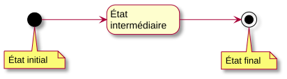
Notion de transition
Transition : connexion unidirectionnelle qui relie 2 états
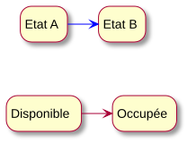
Exemple : objet « place de parking »
Notion d'événement
Correspond à l'occurrence d'une situation donnée
Information instantanée qui doit être traitée quand elle apparaît
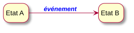
Résumé
État d'une entité
- Situation que l'on désire connaître et gérer
Transition
- Passage d'une entité d'un état à un autre
- Elle est déclenchée par un événement
Événement
- Stimulus qui provoque une ou plusieurs transitions
- À chaque stimulus peut correspondre une action responsable des modifications de l'entité
États spéciaux
L'état de démarrage : obligatoire, unique
Les états finaux : optionnels, peuvent être multiples
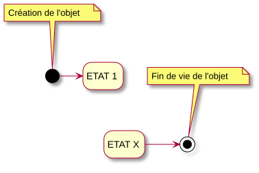
Notion de garde
Une garde est une condition booléenne qui permet ou non le déclenchement d'une transition lors de l'occurrence d'un événement
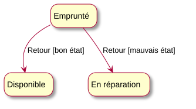
Notions d'opération et d'action
Actions et activités
- Lien entre les opérations définies dans la spécification d'une classe et les événements qui apparaissent dans le diagramme d'états-transitions
- Chaque transition peut avoir une action à exécuter lorsqu'elle est déclenchée. L'action est considérée comme instantanée et atomique
- L'action a accès aux paramètres de l'événement ainsi qu'aux attributs de l'entité sur laquelle elle s'applique
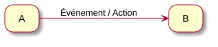
il pleut / ouvrir parapluie
Salut / serrer main
Actions dans les états
Les états peuvent également contenir des actions, exécutées soit
- à l'entrée (entry) ou à la sortie (exit) de l'état
- lorsqu'une occurrence d'événement interne (on) survient (exécutée lors de l'occurrence d'un événement qui ne conduit pas à un autre état)
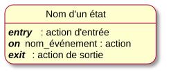
Événements internes
Événement interne = événement associé à un état donné
- Un événement interne n'entraîne pas l'exécution des actions de sortie et d'entrée, contrairement au déclenchement d'une transition réflexive
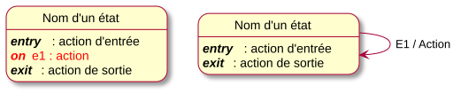
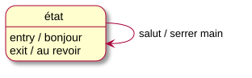
≠
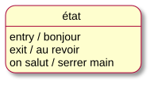
Activités
Contrairement à une action, une activité est une opération qui dure un certain temps
- Associée à un état
- Commence une fois entré dans l'état
- S'exécute jusqu'à la fin si elle n'est pas interrompue par une transition sortante (donc tant que l'état ne change pas)
- Peut être interrompue, car elle ne modifie pas l'état de l'objet
Résumé
6 manières d'associer une opération à une transition
- l'action associée à la transition d'entrée (op1)
- l'action d'entrée de l'état (op2)
- l'activité dans l'état (op3)
- l'action de sortie de l'état (op4)
- l'action associée aux événements internes (op5)
- l'action associée à la transition de sortie de l'état (op6)
Exemple : distributeur de boissons
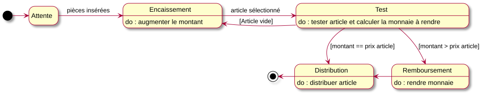
prix article]" width="1800px">
Généralisation d'états
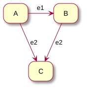
➡
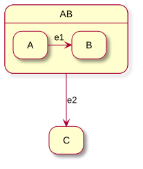
Les états A et B ont un comportement équivalent ⇒ Généralisation en AB
États imbriqués (composites)
Si le diagramme d'états-transitions devient trop complexe, on peut utiliser des états imbriqués pour le simplifier
Un super-état ou état composite est un état qui englobe d'autres états appelés sous-états
Le nombre d'imbrications n'est pas limité, mais ne pas en abuser (lisibilité !)
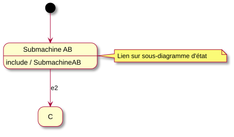
Timing Diagram
À partir d'un diagramme de séquence système (DSS) tourné de 90°, on peut créer un diagramme de temps
Acteur + Ligne de vie ⇒ Timeline
Acteur + Ligne de vie ⇒ Timeline
- Montre les changements d'états (continus ou discrets) d'un ou plusieurs acteurs
- Surtout destiné aux systèmes « temps réel »
Ligne de vie
“Software modelers use a UML timing diagrams to precisely document a schedule of interactions or state changes in a system”
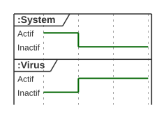
Une ligne de vie (lifeline, swimlane) par participant
State / condition timeline
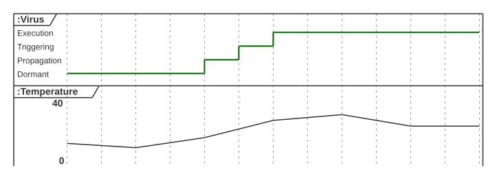
Axe du temps ⟶
Un diagramme de temps peut illustrer les états, discrets ou continus, d'un composant, d'un objet, d'un attribut
Contrainte de durée
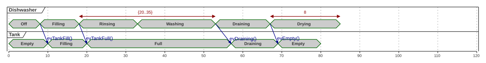
Une contrainte de durée, indiquée entre accolades, par exemple {20…35}, {<10'}, {15'…}, est une condition qui invalide la suite si non respectée
Les flèches entre les lignes de vie sont des messages (evTankFill(), evEmpty()…)
Contrainte de temps
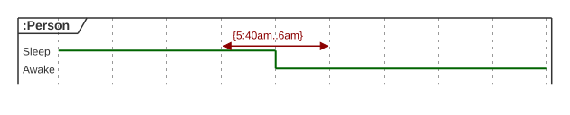
La personne doit se lever entre 5h40 et 6h du matin
sous peine… de quitter le scénario nominal, rater sa vie…
Flèche entre intervalle {05h40..06h00} ou borne {…6h00} et timeline
End of timeline
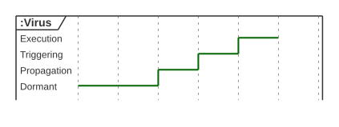
La fin de la ligne marque la fin de vie de l'acteur Virus.
Correspond à la fin de la période d'activité du DSS.
Exemple
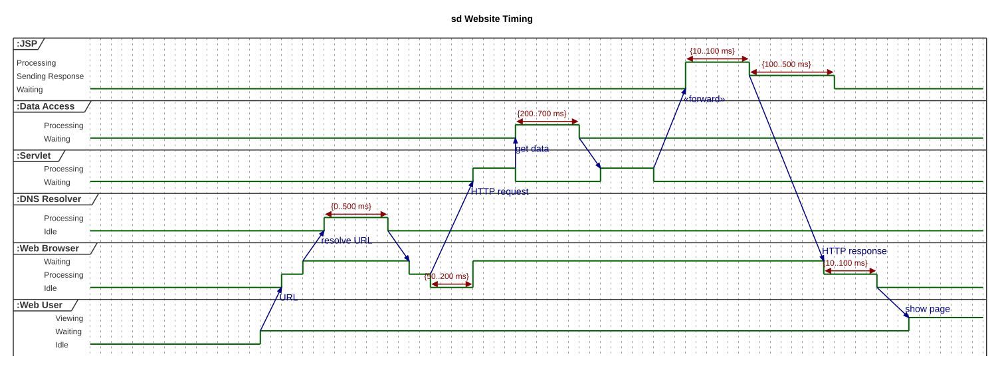